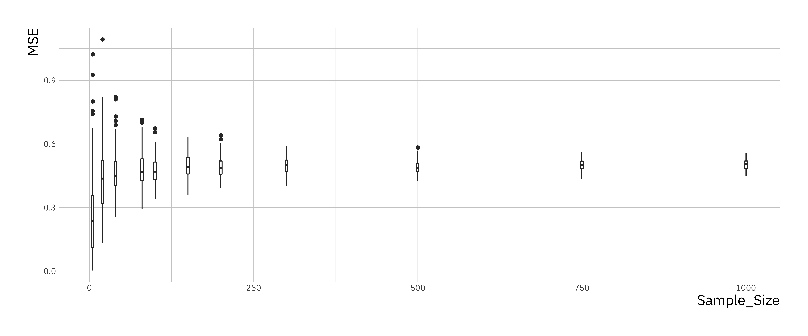

Chapter 8 Excersise II
b0 <- 10 # regression coefficient for intercept
b1 <- -8 # regression coefficient for slope
sigma2 <- 0.5 # noise variance
# number of simulations for each sample size
n_simulations <- 100
# A vector of sample sizes to try
sample_size_v <- c( 5, 20, 40, 80, 100, 150, 200, 300, 500, 750, 1000 )
n_sample_size <- length(sample_size_v)
# Create a matrix to store results
mse_matrix <- matrix(0, nrow = n_simulations, ncol = n_sample_size)
# name row and column
rownames(mse_matrix) <- c(1:n_simulations)
colnames(mse_matrix) <- sample_size_v # loop over sample size
for (i in 1:n_sample_size) {
N <- sample_size_v[i]
# for each simulation
for (it in 1:n_simulations) {
x <- rnorm(N, mean = 0, sd = 1)
e <- rnorm(N, mean = 0, sd = sqrt(sigma2))
y <- b0 + b1 * x + e
# set up a data frame and run lm()
sim_data <- data.frame(x = x, y = y)
lm_fit <- lm(y ~ x, data = sim_data)
# compute the mean squared error between the fit and the actual y's
y_hat <- fitted(lm_fit)
mse_matrix[it, i] <- mean((y_hat - y)^2)
}
}library(reshape2)
mse_df = melt(mse_matrix) # convert the matrix into a data frame for ggplot
names(mse_df) = c("Simulation", "Sample_Size", "MSE") # rename the columns
# now use a boxplot to look at the relationship between mean-squared prediction error and sample size
mse_plt = ggplot(mse_df, aes(x=Sample_Size, y=MSE))
mse_plt = mse_plt + geom_boxplot( aes(group=Sample_Size) )
print(mse_plt)
You should see that the variance of the mean-squared error goes down as the sample size goes up and converges towards a limiting value. Larger sample sizes help reduce the variance in our estimators but do not make the estimates more accurate.
Can you do something similar to work out the relationship between how accurate the regression coefficient estimates are as a function of sample size?